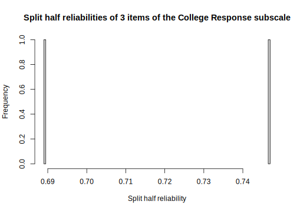
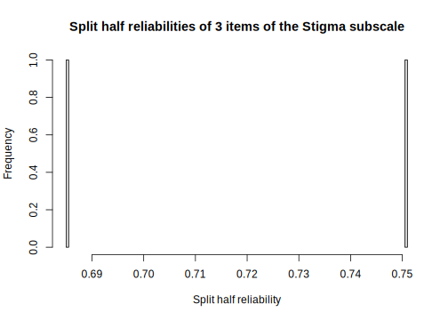
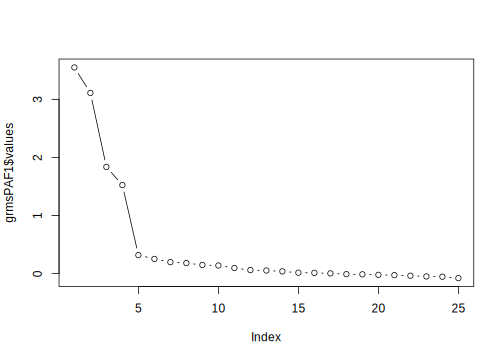
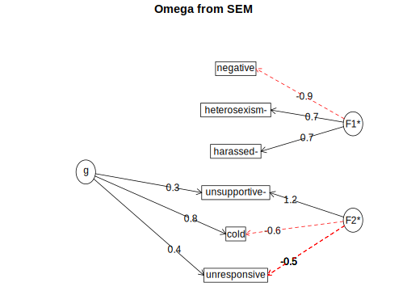

Chapter 5 Reliability
The focus of this lecture is the assessment of reliability. We start by defining classical test theory and examing several forms of reliability. While the majority of our time is spent considering estimates of internal consistency, we also examine retest reliability and interrater reliability.
5.2 Defining Reliability
5.2.1 Begins with Classical Test Theory (CTT)
CTT is based on Spearman’s (1904) true-score model, where
- an observed score is conceived of as consisting of two components – a true component and an error component
- X = T + E
- X = the fallible, observed/manifest score, obtained under ideal or perfect conditions of measurement (these conditions never exist);
- T = the true/latent score (that will likely remain unknown); and
- E = random error
- In CTT, we assume that the traits measured are constant and the errors random.
- Therefore, the mean of measurement errors for any individual (upon numerous repeated testings) would be ????.
- That said, in CTT, the true score would be equal to the mean of the observed scores over an indefinite number of repeated measures.
- Caveat: this is based on the assumption that when individuals are repeatedly measured, their true scores remain unchanged.
- In classic test theory, true score can be estimated over multiple trials. However, if errors are systematically biased, the true score will remain unknown.
5.2.2 Why are we concerned with reliability? Error
- Measurements are imperfect and every observation has some unknown amount of error associated with it. Two components in error:
- random/unsystematic: varies in unpredictable and inconsistent ways upon repeated measurements; sources are unknown
- systematic: recurs upon repeated measurements reflecting situational or individual effects that, theoretically, could be specified.
- Correlations are attenuated from the true correlation if the observations contain error.
- Knowing the reliability of an instruments allows us to
- estimate the degree to which measured at one time and place with one instrument predict scores at another time and/or place and perhaps measured with a different instrument
- estimate the consistency of scores
- estimate “…the degree to which test scores are free from errors of measurement” (APA, 1985, p. 19)
Figure 7.1a in Revelle’s chapter illustrates the attentuation of the correlation between the variables p and q as a function of reliabilty.
- circles (latent variables) represent the true score
- observed/measured/manifest variables are represented by squares and each has an associated error; not illustrated are the random and systematic components of error
- a true score, is composed of a measured variable and its error
- the relationship between the true scores would be stronger than the one between the measured variables
- moving to 7.1b, the correlation between LV p and the observed ’’ can be estimated from the correlation of p’ with a parallel test (this is the reliability piece)
Figure 7.2 in Revelle’s Chapter 7 (n.d.) illustrates the conceptual effect of reliability on the estimation of a true score.
5.2.3 The Reliability Coefficient
The symbol for reliability, \(r_{xx}\), sums up the big-picture definition: that reliability is the correlation of a measure with itself. There are a number of ways to think about it:
- a “theoretical validity” of a measure because it refers to a relationship between observed scores and scores on a latent variable or construct,
- represents the fraction of an observed score variance that is not error,
- ranges from 0-1
- 1, when all observed variance is due to true-score variance; there are no random errors,
- 0, when all observed variance is due to random errors of measurement,
- represents the squared correlation between observed scores and true scores,
- the ratio between true-score variance and observed score variance (for a formulaic rendition see (Pedhazur & Schmelkin, 1991)),
\[r_{xt}^{2}=r_{xx} =\frac{\sigma_{2}^{t}}{\sigma_{2}^{x}}\] where \(r_{xt}^{2}\) is the proportion of variance between observed scores (t + e) and true scores (t); its square root is the correlation
\(r_{xx}\) is the reliability of a measure
\({\sigma_{2}^{t}}\) is the variance of true scores
\({\sigma_{2}^{x}}\) is the variance of observed scores
- The reliability coefficient is interpreted as the proportion of systematic variance in the observed score.
- .8 means that 80% of the variance of the observed scores is systematic;
- .2 (e.g., 1.00 - .8)is the proportion of variance due to random errors;
- the reliability coefficient is population specific.
To restate the first portion of the formula: although reliability is expressed as a correlation between observed scores, it is also the ratio of reliable variance to total variance.
5.3 Research Vignette
The research vignette for this lesson is the development and psychometric evaluation of the Perceptions of the LGBTQ College Campus Climate Scale (Szymanski & Bissonette, 2020). The scale is six items with responses rated on a 7-point Likert scale ranging from 1 (strongly disagree) to 7 (strongly agree). Higher scores indicate more negative perceptions of the LGBTQ campus climate. Szymanski and Bissonette (2020) have suggested that the psychometric evaluation supports using the scale in its entirety or as subscales composed of the following items:
- College response to LGBTQ students:
- My university/college is cold and uncaring toward LGBTQ students. (cold)
- My university/college is unresponsive to the needs of LGBTQ students. (unresponsive)
- My university/college provides a supportive environment for LGBTQ students. [un]supportive; must be reverse-scored
- LGBTQ Stigma:
- Negative attitudes toward LGBTQ persons are openly expressed on my university/college campus. (negative)
- Heterosexism, homophobia, biphobia, transphobia, and cissexism are visible on my university/college campus. (heterosexism)
- LGBTQ students are harassed on my university/college campus. (harassed)
A preprint of the article is available at ResearchGate.Below is the script for simulating item-level data from the factor loadings, means, and sample size presented in the published article.
set.seed(210827)
SzyT1 <- matrix(c(.88, .73, .73, -.07,-.02, .16, -.03, .10, -.04, .86, .76, .71), ncol=2) #primary factor loadings for the two factors
rownames(SzyT1) <- c("cold", "unresponsive", "supportiveNR", "negative", "heterosexism", "harassed") #variable names for the six items
#rownames(Szyf2) <- paste("V", seq(1:6), sep=" ") #prior code I replaced with above
colnames(SzyT1) <- c("F1", "F2")
SzyCorMat <- SzyT1 %*% t(SzyT1) #create the correlation matrix
diag(SzyCorMat) <- 1
#SzyCorMat #prints the correlation matrix
SzyM <- c(2.31, 3.11, 2.40, 3.18, 4.44, 3.02) #item means
SzySD <- c(1.35, 1.46, 1.26, 1.60, 1.75, 1.50) #item standard deviations; turns out we won't need these since we have a covariance matrix
SzyCovMat <- SzySD %*% t(SzySD) * SzyCorMat #creates a covariance matrix from the correlation matrix
#SzyCovMat #displays the covariance matrix
dfSzyT1 <- as.data.frame(round(MASS::mvrnorm(n=646, mu = SzyM, Sigma = SzyCovMat, empirical = TRUE),0)) #creates the item level data from the sample size, mean, and covariance matrix
dfSzyT1[dfSzyT1>7]<-7 #restricts the upperbound of all variables to be 7 or less
dfSzyT1[dfSzyT1<1]<-1 #resticts the lowerbound of all variable to be 1 or greater
#colMeans(dfSzyT1) #displays column means
library(tidyverse)Warning: package 'tidyverse' was built under R version 4.0.5-- Attaching packages --------------------------------------- tidyverse 1.3.1 --v ggplot2 3.3.3 v purrr 0.3.4
v tibble 3.1.1 v dplyr 1.0.5
v tidyr 1.1.3 v stringr 1.4.0
v readr 1.4.0 v forcats 0.5.1Warning: package 'tibble' was built under R version 4.0.5Warning: package 'tidyr' was built under R version 4.0.5Warning: package 'dplyr' was built under R version 4.0.5Warning: package 'forcats' was built under R version 4.0.5-- Conflicts ------------------------------------------ tidyverse_conflicts() --
x dplyr::filter() masks stats::filter()
x dplyr::lag() masks stats::lag()library(dplyr)
dfSzyT1 <- dfSzyT1 %>% dplyr::mutate(ID = row_number()) #add ID to each row
dfSzyT1 <- dfSzyT1%>%dplyr::select(ID, everything())#moving the ID number to the first column; requires
dfSzyT1<- dfSzyT1 %>%
mutate(supportive = 8 - supportiveNR) #because the original scale had 1 reversed item, I reversed it so that we can re-reverse it for practice. Remember in reversals we subtract from a number 1 greater than our scaling
dfSzyT1 <- dfSzyT1%>%
select(-supportiveNR)psych::describe(dfSzyT1) vars n mean sd median trimmed mad min max range skew
ID 1 646 323.50 186.63 323.5 323.50 239.44 1 646 645 0.00
cold 2 646 2.42 1.17 2.0 2.34 1.48 1 6 5 0.49
unresponsive 3 646 3.17 1.43 3.0 3.13 1.48 1 7 6 0.20
negative 4 646 3.22 1.52 3.0 3.16 1.48 1 7 6 0.33
heterosexism 5 646 4.41 1.61 4.0 4.45 1.48 1 7 6 -0.20
harassed 6 646 3.07 1.42 3.0 3.02 1.48 1 7 6 0.33
supportive 7 646 5.52 1.14 6.0 5.57 1.48 2 7 5 -0.30
kurtosis se
ID -1.21 7.34
cold -0.52 0.05
unresponsive -0.65 0.06
negative -0.47 0.06
heterosexism -0.60 0.06
harassed -0.36 0.06
supportive -0.76 0.04If we look at the information about this particular scale, we recognize that the supportive item is scaled in the opposite direction of the rest of the items. That is, a higher score on supportive would indicate a positive perception of the campus climate for LGBTQ individuals, whereas higher scores on the remaining items indicate a more negative perception. Before moving forward, we must reverse score this item.
In doing this, I will briefly note that in this case I have given my variables one-word names that represent each item. Many researchers (including myself) will often give variable names that are alpha numerical: LGBTQ1, LGBTQ2, LGBTQn. Either is acceptable. In the psychometric case, the one-word names may be useful shortcuts as one begins to understand the inter-item relations.
In reverse-scoring the supportive item, I will rename it “unsupportive” as an indication of its reversed direction.
library(tidyverse)
dfSzyT1<- dfSzyT1 %>%
dplyr::mutate(unsupportive = 8 - supportive)#when reverse-coding, subtract the variable from one number higher than the scaling
psych::describe(dfSzyT1) vars n mean sd median trimmed mad min max range skew
ID 1 646 323.50 186.63 323.5 323.50 239.44 1 646 645 0.00
cold 2 646 2.42 1.17 2.0 2.34 1.48 1 6 5 0.49
unresponsive 3 646 3.17 1.43 3.0 3.13 1.48 1 7 6 0.20
negative 4 646 3.22 1.52 3.0 3.16 1.48 1 7 6 0.33
heterosexism 5 646 4.41 1.61 4.0 4.45 1.48 1 7 6 -0.20
harassed 6 646 3.07 1.42 3.0 3.02 1.48 1 7 6 0.33
supportive 7 646 5.52 1.14 6.0 5.57 1.48 2 7 5 -0.30
unsupportive 8 646 2.48 1.14 2.0 2.43 1.48 1 6 5 0.30
kurtosis se
ID -1.21 7.34
cold -0.52 0.05
unresponsive -0.65 0.06
negative -0.47 0.06
heterosexism -0.60 0.06
harassed -0.36 0.06
supportive -0.76 0.04
unsupportive -0.76 0.04Next, I will create dfs that each contain the items of the total and subscales. These will be useful in the reliability estimates that follow.
LGBTQT1 <- dplyr::select(dfSzyT1, cold, unresponsive, unsupportive, negative, heterosexism, harassed)
ResponseT1 <- dplyr::select(dfSzyT1, cold, unresponsive, unsupportive)
StigmaT1 <- dplyr::select(dfSzyT1, negative, heterosexism, harassed)5.4 The Big Parade of Reliability Coefficients
While I cluster the reliability coefficients into large groups, please understand that these are somewhat overlapping.
Table 1 in Revelle and Condon’s (2019b) article provides a summary of of the type of reliability tested, the findings, and the function used in the psych package.
5.5 Reliability Options for a Single Administration
If reliability is defined as the correlation between a test and a test just like it, how do we estimate the reliability of a single test, given only one time (revelle_william_reliability_nodate?)? It may help to keep in mind that reliability is the ratio of true score variance to test score variance (or 1 - the ratio of error variance). Thus, the goal is to estimate the amount of error variance in the test. In this case we can investigate:
- a correlation between two random parts of the test
- internal consistency
- the internal structure of the test
5.5.1 Split half reliability
Split half reliability is splitting a test into two random halves, correlating the two halves, and adjusting the correlation with the Spearman-Brown prophecy formula. Abundant formulaic detail in Revelle’s Chapter 7/Reliability (n.d.).
An important question to split half is “How to split?” Revelle terms it a “combinatorially difficult problem.” There are 126 possible splits for a 10 item scale, 6,345 possible splits for a 16 item scale, and over 4.5 billion for a 36 item scale! The psych package’s splitHalf() function will try all possible splits for scales of up to 16 items, then sample 10,000 splits for scales longer than that.
split <- psych::splitHalf (LGBTQT1, raw = TRUE, brute = TRUE)
split #show the results of the analysisSplit half reliabilities
Call: psych::splitHalf(r = LGBTQT1, raw = TRUE, brute = TRUE)
Maximum split half reliability (lambda 4) = 0.78
Guttman lambda 6 = 0.73
Average split half reliability = 0.64
Guttman lambda 3 (alpha) = 0.64
Guttman lambda 2 = 0.7
Minimum split half reliability (beta) = 0.04
Average interitem r = 0.23 with median = 0.09
2.5% 50% 97.5%
Quantiles of split half reliability = 0.17 0.71 0.78hist(split$raw,breaks = 101, xlab = "Split half reliability",
main = "Split half reliabilities of 6 LGBTQ items")
Results of the split-half can provide some indication of whether not the scale is unidimensional.
In this case the maximum reliability coefficient is .78, the average .64, and the lowest is .04. Similarly we can look at the quantiles: .17, .71, .78.
The split-half output also includes the classic Cronbach’s (1951) alpha coefficient (.64; aka Guttman lambda 3) and average interitem correlations (.24). The figure plots the frequencies of the reliability coefficient values.
While I did not find guidelines on what constitutes a “high enough lowerbound” to establish homogeneity, Revelle suggested that a scale with .85, 80, and .65 had “strong evidence for a relatively homogeneous scale.” When the values were .81, .73, .42, Revelle indicated that there was “strong evidence for non-homogeneity” (Revelle & Condon, 2019a, p. 11). In making this declaration Revelle was also looking at the strength of the inter-item correlation and for a rather tight, bell-shaped distribution, at the higher (> .73) end of the figure. We don’t quite have that.
What happens when we examine the split-half estimates of the subscales? With only three items, there’s not much of a split and so the associated histogram will not be helpful.
splitRx <- psych::splitHalf (ResponseT1, raw = TRUE, brute = TRUE)
splitRx #show the results of the analysisSplit half reliabilities
Call: psych::splitHalf(r = ResponseT1, raw = TRUE, brute = TRUE)
Maximum split half reliability (lambda 4) = 0.75
Guttman lambda 6 = 0.72
Average split half reliability = 0.96
Guttman lambda 3 (alpha) = 0.79
Guttman lambda 2 = 0.79
Minimum split half reliability (beta) = 0.69
Average interitem r = 0.56 with median = 0.58
2.5% 50% 97.5%
Quantiles of split half reliability = 0.69 0.72 0.75hist(splitRx$raw,breaks = 101, xlab = "Split half reliability",
main = "Split half reliabilities of 3 items of the College Response subscale")
The alpha is higher – .79 The range of splits for max, ave, and low are .75, .96, and .69 and the quantiles are 0.69 0.72 0.75. The inter-item correlations have an average of .57.
Let’s look at the split half reliabilities for the Stigma subscale.
splitSt <- psych::splitHalf (StigmaT1, raw = TRUE, brute = TRUE)
splitSt #show the results of the analysisSplit half reliabilities
Call: psych::splitHalf(r = StigmaT1, raw = TRUE, brute = TRUE)
Maximum split half reliability (lambda 4) = 0.75
Guttman lambda 6 = 0.72
Average split half reliability = 0.96
Guttman lambda 3 (alpha) = 0.79
Guttman lambda 2 = 0.79
Minimum split half reliability (beta) = 0.7
Average interitem r = 0.56 with median = 0.57
2.5% 50% 97.5%
Quantiles of split half reliability = 0.7 0.72 0.75hist(splitRx$raw,breaks = 101, xlab = "Split half reliability",
main = "Split half reliabilities of 3 items of the Stigma subscale") The maximum, average, and minimum split half reliabilities were .74, .96, and .70; quantiles were at .70, .72, and .74. The average interitem correlation was .56.
Because the alpha coefficient can be defined as the “average of all possible split-half coefficients” for the groups tested, it is common for researchers to not provide split half results in their papers. This is true for our research vignette. I continue to teach the split half because it can be a stepping stone in the conceptualization of internal consistency as an estimate of reliability.
5.5.2 From alpha
The most common methods to assess internal consistency are the KR20 (for dichotomous items) and \(\alpha\) (for Likert scaling); alpha has an alias, \(\lambda _{3}\) (the Guttman lambda 3).
Alpha and the Guttman 3 (used for scales with Likert-type scaling) may be thought of as:
- a function of the number of items and the average correlation between the items
- the correlation of a test with a non-existent test just like it
- average of all possible split-half coefficients for the groups tested
Although the psych package has an incredible and thorough alpha() function, Revelle is not a fan of alpha. In fact, his alpha function reports a 95% CI around alpha as well as bootstrapped alpha results.
Let’s grab alpha coefficients for our total and subscales.
psych::alpha (LGBTQT1)
Reliability analysis
Call: psych::alpha(x = LGBTQT1)
raw_alpha std.alpha G6(smc) average_r S/N ase mean sd median_r
0.64 0.64 0.73 0.23 1.8 0.023 3.1 0.83 0.089
lower alpha upper 95% confidence boundaries
0.6 0.64 0.69
Reliability if an item is dropped:
raw_alpha std.alpha G6(smc) average_r S/N alpha se var.r med.r
cold 0.62 0.60 0.66 0.23 1.5 0.024 0.075 0.111
unresponsive 0.60 0.58 0.67 0.22 1.4 0.024 0.094 0.076
unsupportive 0.63 0.62 0.70 0.25 1.6 0.023 0.083 0.124
negative 0.59 0.62 0.67 0.24 1.6 0.026 0.070 0.124
heterosexism 0.60 0.61 0.69 0.24 1.6 0.026 0.081 0.124
harassed 0.55 0.57 0.68 0.21 1.3 0.030 0.100 0.033
Item statistics
n raw.r std.r r.cor r.drop mean sd
cold 646 0.52 0.60 0.53 0.32 2.4 1.2
unresponsive 646 0.60 0.64 0.56 0.37 3.2 1.4
unsupportive 646 0.48 0.56 0.45 0.28 2.5 1.1
negative 646 0.63 0.57 0.50 0.39 3.2 1.5
heterosexism 646 0.64 0.58 0.48 0.39 4.4 1.6
harassed 646 0.70 0.66 0.57 0.50 3.1 1.4
Non missing response frequency for each item
1 2 3 4 5 6 7 miss
cold 0.26 0.29 0.25 0.14 0.04 0.00 0.00 0
unresponsive 0.15 0.20 0.24 0.23 0.13 0.04 0.01 0
unsupportive 0.24 0.28 0.28 0.16 0.04 0.00 0.00 0
negative 0.15 0.19 0.24 0.22 0.12 0.05 0.02 0
heterosexism 0.05 0.08 0.14 0.25 0.22 0.14 0.12 0
harassed 0.16 0.21 0.24 0.24 0.11 0.02 0.02 0The second screen of output shows the information we are interested in:
- raw_alpha, .64 is based on the covariances
- std.apha, .64 is based on correlations
- average_r, .24 is the average inter-item correlation (i.e., all possible pairwise combinations of items)
psych::alpha(ResponseT1)
Reliability analysis
Call: psych::alpha(x = ResponseT1)
raw_alpha std.alpha G6(smc) average_r S/N ase mean sd median_r
0.78 0.79 0.72 0.56 3.8 0.015 2.7 1 0.58
lower alpha upper 95% confidence boundaries
0.75 0.78 0.81
Reliability if an item is dropped:
raw_alpha std.alpha G6(smc) average_r S/N alpha se var.r med.r
cold 0.64 0.65 0.48 0.48 1.8 0.028 NA 0.48
unresponsive 0.74 0.74 0.58 0.58 2.8 0.021 NA 0.58
unsupportive 0.75 0.76 0.61 0.61 3.1 0.019 NA 0.61
Item statistics
n raw.r std.r r.cor r.drop mean sd
cold 646 0.86 0.87 0.78 0.69 2.4 1.2
unresponsive 646 0.86 0.83 0.69 0.61 3.2 1.4
unsupportive 646 0.80 0.82 0.67 0.59 2.5 1.1
Non missing response frequency for each item
1 2 3 4 5 6 7 miss
cold 0.26 0.29 0.25 0.14 0.04 0.00 0.00 0
unresponsive 0.15 0.20 0.24 0.23 0.13 0.04 0.01 0
unsupportive 0.24 0.28 0.28 0.16 0.04 0.00 0.00 0In the case of the College Response subscale:
- raw_alpha, .79 is based on the covariances
- std.apha, .80 is based on correlations
- average_r, .57 is the average interitem correlation
psych::alpha(StigmaT1)
Reliability analysis
Call: psych::alpha(x = StigmaT1)
raw_alpha std.alpha G6(smc) average_r S/N ase mean sd median_r
0.79 0.79 0.72 0.56 3.8 0.014 3.6 1.3 0.57
lower alpha upper 95% confidence boundaries
0.76 0.79 0.82
Reliability if an item is dropped:
raw_alpha std.alpha G6(smc) average_r S/N alpha se var.r med.r
negative 0.66 0.66 0.49 0.49 1.9 0.027 NA 0.49
heterosexism 0.72 0.72 0.57 0.57 2.6 0.022 NA 0.57
harassed 0.76 0.76 0.62 0.62 3.2 0.019 NA 0.62
Item statistics
n raw.r std.r r.cor r.drop mean sd
negative 646 0.87 0.87 0.77 0.69 3.2 1.5
heterosexism 646 0.85 0.84 0.71 0.63 4.4 1.6
harassed 646 0.80 0.82 0.66 0.59 3.1 1.4
Non missing response frequency for each item
1 2 3 4 5 6 7 miss
negative 0.15 0.19 0.24 0.22 0.12 0.05 0.02 0
heterosexism 0.05 0.08 0.14 0.25 0.22 0.14 0.12 0
harassed 0.16 0.21 0.24 0.24 0.11 0.02 0.02 0In the case of the Stigma subscale:
- raw_alpha, .79 is based on the covariances
- std.apha, .79 is based on correlations
- average_r, .56 is the average interitem correlation
The documentation for this package is incredible. Scroll to near the bottom of the alpha() function to learn what these are.
Especially useful are item-level statistics:
- r.drop is the corrected item-total correlation (in the next lesson) for this item against the scale without this item *,mean and sd are the mean and standard deviation of each item, across all individuals.
But don’t get too excited the popularity of alpha emerged when tools available for calculation were less sophisticated. Alpha can be misleading:
- alpha inflates, somewhat artificially, even when inter-item correlations are low.
- a 14-item scale will have an alpha of at least .70 even if it has two orthogonal (i.e., unrelated) scales (Cortina, 1993)
- alpha assumes a unidimensional factor structure,
- the same alpha can be obtained for dramatically different underlying factor structures (see graphs in Revelle’s Chapter 7)
The proper use of alpha requires the following:
- tau equivalence, that is, equal covariances with the latent score represented by the test, and
- unidimensionality, equal factor loadings on the single factor of the test
When either of these is violated, alpha underestimates reliability and overestimates the fraction of test variance that is associated with the general variance in the test.
It is curious that the subscale estimates are stronger than the total scale estimates. This early evidence supports the two-scale solution.
Alpha and the split halves are internal consistency estimates. Moving to model based techniques allows us to take into consideration the factor structure of the scale. In the original article (Szymanski & Bissonette, 2020), results were as follows. Note that the alphas are stronger than in our simulation.:
| Scale (n) | Alpha | Inter-item correlation range | Average inter-item correlation |
|---|---|---|---|
| Total (6) | .85 | .27 to .66 | .49 |
| College Response (3) | .82 | .56 to .67 | .61 |
| Stigma (3) | .83 | .60 to .66 | .63 |
In the article, we can see the boost that alpha gets (.85) when the number of items is double, even though the average inter-item correlation is lower (.49)
5.5.3 to Omega
Assessing reliability with the omega (\(\omega\)) statistics falls into a larger realm of composite reliability where reliability is assessed from a ratio of the variability explained by the items compared with the total variance of the entire scale (McNeish, 2018).Members of the omega family of reliability estimates come from factor exploratory (EFA) and confirmatory (CFA; structural equation modeling (SEM) factor analytic approaches. This lesson precedes the lessons on CFA and SEM. Therefore, my explanations and demonstrations will be somewhat brief. I intend to revisit omega output in the CFA and SEM lessons and encourage you to review this section now, then return to this section again after learning more about CFA and SEM.
In the context of psychometrics it may be useful (albeit an oversimplification) to think of factors as scales/subscales where g refers to the amount of variance in the general factor (or total scale score) and subcales to be items that have something in common that is separate from what is g.
Model based estimates examine the correlations or covariances of the items and decompose the test variance into that which is
- common to all items (g, a general factor),
- specific to some items (f, orthogonal group factors), and
- unique to each item (confounding s specific, and e error variance)
\(\omega\) is something of a shapeshifter. In the psych package
- \(\omega_{t}\) represents the total reliability of the test (\(\omega_{t}\))
- In the psych package, this is calculated from a bifactor model where there is one general g factor (i.e., each item loads on the single general factor), one or more group factors (f), and an item-specific factor (s).
- \(\omega_{h}\) extracts a higher order factor from the correlation matrix of lower level factors, then applies the Schmid and Leiman (1957) transformation to find the general loadings on the original items. Stated another way, it is a measure o f the general factor saturation (g; the amount of variance attributable to one comon factor). The subscript “h” acknowledges the hierarchical nature of the approach.
- the \(\omega_{h}\) approach is exploratory and defined if there are three or more group factors (with only two group factors, the default is to assume they are equally important, hence the factor loadings of those subscales will be equal)
- Najera Catalan (Najera Catalan, 2019) suggests that \(\omega_{h}\) is the best measure of reliability when dealing with multiple dimensions.
- \(\omega_{g}\) is an estimate that uses a bifactor solution via the SEM package lavaan and tends to be a larger (because it forces all the cross loadings of lower level factors to be 0)
- the \(\omega_{g}\) is confirmatory, requiring the specification of which variables load on each group factor
Two commands in psych get us the results:
- omega() reports only the EFA solution
- omegaSem() reports both EFA and CFA solutions
- We will use the omegaSem() function
Note that in our specification, we indicate there are two factors. We do not tell it (anywhere!) what items belong to what factors (think, subscales). One test will be to see if the items align with their respective factors.
psych::omegaSem(LGBTQT1, nfactors=2)Loading required namespace: lavaanLoading required namespace: GPArotation
Three factors are required for identification -- general factor loadings set to be equal.
Proceed with caution.
Think about redoing the analysis with alternative values of the 'option' setting.Warning in lav_model_vcov(lavmodel = lavmodel, lavsamplestats = lavsamplestats, : lavaan WARNING:
Could not compute standard errors! The information matrix could
not be inverted. This may be a symptom that the model is not
identified.
Call: psych::omegaSem(m = LGBTQT1, nfactors = 2)
Omega
Call: omegah(m = m, nfactors = nfactors, fm = fm, key = key, flip = flip,
digits = digits, title = title, sl = sl, labels = labels,
plot = plot, n.obs = n.obs, rotate = rotate, Phi = Phi, option = option,
covar = covar)
Alpha: 0.62
G.6: 0.72
Omega Hierarchical: 0.01
Omega H asymptotic: 0.01
Omega Total 0.79
Schmid Leiman Factor loadings greater than 0.2
g F1* F2* h2 u2 p2
cold 0.85 0.73 0.27 0.01
unresponsive 0.71 0.52 0.48 0.01
unsupportive 0.68 0.46 0.54 0.01
negative- -0.84 0.72 0.28 0.01
heterosexism- -0.73 0.53 0.47 0.01
harassed- -0.68 0.48 0.52 0.00
With eigenvalues of:
g F1* F2*
0.02 1.71 1.71
general/max 0.01 max/min = 1
mean percent general = 0.01 with sd = 0 and cv of 0.49
Explained Common Variance of the general factor = 0.01
The degrees of freedom are 4 and the fit is 0
The number of observations was 646 with Chi Square = 2.59 with prob < 0.63
The root mean square of the residuals is 0.01
The df corrected root mean square of the residuals is 0.01
RMSEA index = 0 and the 10 % confidence intervals are 0 0.049
BIC = -23.29
Compare this with the adequacy of just a general factor and no group factors
The degrees of freedom for just the general factor are 9 and the fit is 1.87
The number of observations was 646 with Chi Square = 1198.08 with prob < 0.0000000000000000000000000000000000000000000000000000000000000000000000000000000000000000000000000000000000000000000000000000000000000000000000000000000000000000000000000000000000000000000000000000000000000000000000000000000000000000000000000000000000032
The root mean square of the residuals is 0.36
The df corrected root mean square of the residuals is 0.46
RMSEA index = 0.452 and the 10 % confidence intervals are 0.431 0.474
BIC = 1139.84
Measures of factor score adequacy
g F1* F2*
Correlation of scores with factors 0.10 0.91 0.90
Multiple R square of scores with factors 0.01 0.82 0.82
Minimum correlation of factor score estimates -0.98 0.64 0.63
Total, General and Subset omega for each subset
g F1* F2*
Omega total for total scores and subscales 0.79 0.80 0.80
Omega general for total scores and subscales 0.01 0.01 0.01
Omega group for total scores and subscales 0.81 0.79 0.79
The following analyses were done using the lavaan package
Omega Hierarchical from a confirmatory model using sem = 0.37
Omega Total from a confirmatory model using sem = 0.73
With loadings of
g F1* F2* h2 u2 p2
cold 0.57 0.65 0.74 0.26 0.44
unresponsive 0.58 0.43 0.52 0.48 0.65
unsupportive 0.46 0.50 0.46 0.54 0.46
negative- 0.85 0.73 0.27 0.01
heterosexism- 0.72 0.52 0.48 0.00
harassed 0.21 -0.68 0.51 0.49 0.09
With sum of squared loadings of:
g F1* F2*
0.91 0.86 1.71
The degrees of freedom of the confirmatory model are 3 and the fit is 12.09965 with p = 0.007049473
general/max 0.53 max/min = 2
mean percent general = 0.27 with sd = 0.28 and cv of 1.01
Explained Common Variance of the general factor = 0.26
Measures of factor score adequacy
g F1* F2*
Correlation of scores with factors 0.67 0.68 0.92
Multiple R square of scores with factors 0.45 0.46 0.84
Minimum correlation of factor score estimates -0.10 -0.08 0.68
Total, General and Subset omega for each subset
g F1* F2*
Omega total for total scores and subscales 0.73 0.80 0.42
Omega general for total scores and subscales 0.37 0.40 0.04
Omega group for total scores and subscales 0.35 0.39 0.38
To get the standard sem fit statistics, ask for summary on the fitted objectThere’s a ton of output! How do we make sense of it?
First, our items aligned perfectly with their respective factors (subscales). That is, it would be problematic if the items switched factors.
Second, we can interpret our results. Like alpha, the omegas range from 0 to 1, where values closer to 1 represent good reliability (Najera Catalan, 2019). For unidimensional measures, * \(\omega_{t}\) values above 0.80 seem to be an indicator of good reliability. For multidimensional measures with well-defined dimensions we strive for \(\omega_{h}\) values above 0.65 (and \(\omega_{t}\) > 0.8). These recommendations are based on a Monte Carlo study that examined a host of reliability indicators and how their values corresponded with accurate predictions of poverty status. With this in mind, let’s examine the output related to our simulated research vignette.
Let’s examine the output in the lower portion where the values are “from a confirmatory model using sem.”
Omega is a reliability estimate for factor analysis that represents the proportion of variance in the LGBTQ scale attributable to common variance, rather than error. The omega for the total reliability of the test (\(\omega_{t}\); which included the general factors and the subscale factors) was .72, meaning that 72% of the variance in the total scale is due to the factors and 28% (100% - 72%) is attributable to error.
Omega hierarchical (\(\omega_{h}\)) estimates are the proportion of variance in the LGBTQ score attributable to the general factor, which in effect treats the subscales as error. \(\omega_{h}\) for the the LGBTQ total scale was .40 A quick calculation with \(\omega_{h}\) (.37) and \(\omega_{t}\) (.72; .40/.72 = .56) lets us know that that 56% of the reliable variance in the LGBTQ total scale is attributable to the general factor.
.4/.72[1] 0.5555556Amongst the output is the Cronbach’s alpha coefficient (.66). Szymanski and Bissonette (Szymanski & Bissonette, 2020) did not report omega results; this may be because there were only two subfactors and/or they did not feel like a bifactor analysis would be appropriate.
5.5.4 Some summary statements about reliability from single administrations
- With the exception of the worst split half-reliability and \(\omega_{g}\) or \(\omega_{h}\), all of the reliability estimates are functions of test length and will tend asymptotically towards 1 as the number of items increases
- the omega output provides a great deal more information about reliability than a simple alpha
- Figure 7.5 in Revelle’s chapter shows four different structural representations of measures that have equal alphas (all .72)
- \(\omega_{(h)}\), \(\beta\), and the worst split half reliability are estimates of the amount of general factor variance in the test scores
- in the case of low general factor saturation, the EFA based \(\omega_{(h)}\) is positively biased, so the CFA-based estimate, \(\omega_{(g)}\), should be used
- \(\omega_{(t)}\) is the model based estimate of the greatest lower bound of the total reliability of the test; so is the best split half reliability
Revelle and Condon’s (Revelle & Condon, 2019a) recommendations to researchers:
- report at least two coefficients (e.g., \(\omega_{(h)}\) and \(\omega_{(t)}\)) and discuss why each is appropriate for the inference that is being made,
- report more than “just alpha” unless you can demonstrate that the measure is tau equivalent and unidimensional
5.6 Reliability Options for Two or more Administrations
5.6.1 Test-retest of total scores
The purpose of test-retest reliability is to understand the stability of the measure over time. With two time points, T1 and T2, the test-retest correlation is an unknown mixture of trait, state, and specific variance, and is a function of the length of time between two measures.
- With two time points we cannot distinguish between trait and state effects, that said
- we would expect a high degree of stability if the retest is (relatively) immediate
- With three time points we can leverage some SEM tools to distinguish between trait and state components
- A large test-retest correlation over a long period of time indicates temporal stability;
- expected if we are assessing something trait like (e.g., cognitive ability, personality trait)
- not expected if we are assessing something state like (e.g., emotional state, mood)
- not expected if there was an intervention (or condition) and the T1 and T2 administrations are part of a pre- and post-test design.
There are some methodological concerns about test-retest reliability. For example, owing to memory and learning effects, the average response time to a second administration of identical items is about 80% the time of the first administration.
Szymanski and Bissonette (2020) did not assess retest reliability. We can, though imagine how this might work. Let’s imagine that both waves were taken in the same academic term, approximately two weeks apart.
With both sets of data we need to create scores for the total scale score and the two subscales. We would also need to join the two datasets into a single dataframe. We could do either, first. I think I would create the scale scores in each df, separately.
In preparing this lesson, I considered several options. While I could (and actually did, but then deleted it) simulate item-level T2 data, I don’t have an easy way to correlate it with the T1 data. The resulting test-retest is absurdly low. So, I will quickly demonstrate how you would score the item-level data for the total and subscale scores, then resimulate scale-level data that is correlated to demonstrate the retest reliability.
The code below presumes that you would have missing data in your raw dataset. Using an available information approach (AIA; (Parent, 2013)) where is common to allow 20-25% missingness, we might allow the total scale score to calculate if there is 1 variable missing; but none for the subscale scores.
LGBTQvars <- c('cold', 'unresponsive', 'negative', 'heterosexism', 'harassed', 'unsupportive')
ResponseVars <- c('cold', 'unresponsive', 'unsupportive')
Stigmavars <- c('negative', 'heterosexism', 'harassed')
dfSzyT1$TotalT1 <- sjstats::mean_n(dfSzyT1[,LGBTQvars], .80)#will create the mean for each individual if 80% of variables are present (this means there must be at least 5 of 6)
dfSzyT1$ResponseT1 <- sjstats::mean_n(dfSzyT1[,ResponseVars], .80)#will create the mean for each individual if 80% of variables are present (in this case all variables must be present)
dfSzyT1$StigmaT1 <- sjstats::mean_n(dfSzyT1[,Stigmavars], .80)#will create the mean for each individual if 80% of variables are present (in this case all variables must be present)We would need to repeat this process with our retest (T2) data, save baby dfs with our scale and total scale scores and then join them.
To demonstrate the retest reliability, I have taken a different path. In order for us to get sensible answers, I went ahead and simulated a new dataset with total and subscale scores for our variables for both waves. This next script is simply that simulation (i.e., you can skip over it).
SimCor_mu <- c(3.13, 2.68, 3.58, 3.16, 2.66, 2.76)
SimCor_sd <- c(0.82, 1.04, 1.26, 0.83, 1.05, .99)
simCor <- matrix (c(1, 0.64, 0.77, 0.44, 0.33, 0.29,
0.64, 1, 0.53, 0.35, 0.46, 0.34,
0.77, 0.53, 1, 0.27, 0.4, 0.47,
0.44, 0.35, 0.27, 1, 0.63, 0.62,
0.33, 0.46, 0.4, 0.63, 1, 0.57,
0.29, 0.34, 0.47, 0.62, 0.57, 1),
ncol = 6)
scovMat <- SimCor_sd %*% t(SimCor_sd)*simCor
set.seed(210829)
retest_df <- MASS::mvrnorm(n = 646, mu = SimCor_mu, Sigma = scovMat, empirical = TRUE)
colnames(retest_df) <- c("TotalT1", "ResponseT1", "StigmaT1", "TotalT2", "ResponseT2", "StigmaT2")
retest_df <- as.data.frame(retest_df) #converts to a df so we can use in R
library(dplyr)
retest_df <- retest_df %>% dplyr::mutate(ID = row_number()) #add ID to each row
retest_df <- retest_df %>%dplyr::select(ID, everything())#moving the ID number to the first column; requiresExaming our df, we can see the ID variable and the three sets of scores for each wave of analysis. Now we simply ask for their correlations. There are a number of ways to do this, the apaTables package can do the calculations and pop it into a manuscript-ready table.
We won’t want the ID variable to be in the table.
retest_df2 <- retest_df %>%
dplyr::select (c(-ID))apaTables::apa.cor.table(data = retest_df2, landscape=TRUE, table.number = 1, filename="Table_1_Retest.doc")
Table 1
Means, standard deviations, and correlations with confidence intervals
Variable M SD 1 2 3 4
1. TotalT1 3.13 0.82
2. ResponseT1 2.68 1.04 .64**
[.59, .68]
3. StigmaT1 3.58 1.26 .77** .53**
[.74, .80] [.47, .58]
4. TotalT2 3.16 0.83 .44** .35** .27**
[.38, .50] [.28, .42] [.20, .34]
5. ResponseT2 2.66 1.05 .33** .46** .40** .63**
[.26, .40] [.40, .52] [.33, .46] [.58, .67]
6. StigmaT2 2.76 0.99 .29** .34** .47** .62**
[.22, .36] [.27, .41] [.41, .53] [.57, .67]
5
.57**
[.52, .62]
Note. M and SD are used to represent mean and standard deviation, respectively.
Values in square brackets indicate the 95% confidence interval.
The confidence interval is a plausible range of population correlations
that could have caused the sample correlation (Cumming, 2014).
* indicates p < .05. ** indicates p < .01.
As expected in this simulation,
- the strongest correlations are within each scale at their respective time, that is t
- the T1 variables correlate with each other;
- the T2 variables correlate with each other).
- the next strongest correlations are with the same scale/subscale configuration across time, for example
- TotalT1 with TotalT2
- ResponseT1 with ResponseT2
- StigmaT1 with StigmaT2
- the lowest correlations are different scales at T1 and T2
- ResponseT1 with StigmaT2
5.6.2 Test Retest Recap
Here are some summary notions for retest reliability.
- increases in the interval will lower the reliability coefficient
- an experimental intervention that is designed to impact the retest assessment will lower the reliability coefficient
- state measures will have lower retest coefficients than trait measures
- and those all interact with each other
Note: there are numerous demonstrations in the Revelle and Condon (2019a, 2019b) materials (Table 1). In addition to the myriad of vignettes used to illustrate foci on state, trait, items, whole scale, etc., there were demos on duplicated items, assessing for consistency, and parallel/alternate forms.
If you are asking, “Hey, is parallel/alternate forms really a variant of test retest?” Great question! In fact, split-half could be seen as test-retest… once you get in the weeds, the distinctions become less clear.
5.7 Interrater Reliability
5.7.1 Cohen’s kappa
Cohen’s kappa coefficient is used to calculate proportions of agreement corrected for chance. This type of analysis occurs in research designs where there is some kind of (usually) categorical designation of a response. I don’t have a research vignette for this. In the past, I was involved in research where members of the research team coded counselor utterances according to Hill’s helping skills system designed by Clara Hill (Hill, 2020). In the helping skills system, 15 different helping skills are divided into three larger groups that generally reflect the counseling trajectory: exploration, insight, action. One of our analyses divided counselor utterances into these categories. Let’s look at a fabricated (not based on any real data) simulation where four raters each evaluated 12 counselor utterances (that represent the arch of a nonsensically speedy counseling session).
Rater1 <- c("exploration","exploration","exploration","exploration","exploration","exploration","insight","insight","action","action","action","action" )
Rater2 <- c("exploration","exploration","exploration","insight","exploration","insight","exploration","exploration","exploration","action","exploration","action" )
Rater3 <- c("exploration","insight","exploration","exploration","exploration","exploration","exploration","insight","insight","insight","action","action" )
Rater4 <- c("exploration","exploration","exploration","exploration","exploration","exploration","exploration","exploration","exploration","action","action","action" )
ratings <- data.frame(Rater1, Rater2, Rater3, Rater4)Historically, kappa could only be calculated for 2 raters at a time. Presently, though, it appears there can be any number of raters and the average agreement is reported.
Let’s take a look at the data, then run the analysis, and interpret the results.
psych::cohen.kappa(ratings)Warning in cohen.kappa1(x1, w = w, n.obs = n.obs, alpha = alpha, levels =
levels): upper or lower confidence interval exceed abs(1) and set to +/- 1.
Warning in cohen.kappa1(x1, w = w, n.obs = n.obs, alpha = alpha, levels =
levels): upper or lower confidence interval exceed abs(1) and set to +/- 1.
Warning in cohen.kappa1(x1, w = w, n.obs = n.obs, alpha = alpha, levels =
levels): upper or lower confidence interval exceed abs(1) and set to +/- 1.
Warning in cohen.kappa1(x1, w = w, n.obs = n.obs, alpha = alpha, levels =
levels): upper or lower confidence interval exceed abs(1) and set to +/- 1.
Warning in cohen.kappa1(x1, w = w, n.obs = n.obs, alpha = alpha, levels =
levels): upper or lower confidence interval exceed abs(1) and set to +/- 1.
Warning in cohen.kappa1(x1, w = w, n.obs = n.obs, alpha = alpha, levels =
levels): upper or lower confidence interval exceed abs(1) and set to +/- 1.
Cohen Kappa (below the diagonal) and Weighted Kappa (above the diagonal)
For confidence intervals and detail print with all=TRUE
Rater1 Rater2 Rater3 Rater4
Rater1 1.00 0.40 0.21 0.62
Rater2 0.14 1.00 0.00 0.57
Rater3 0.48 0.00 1.00 0.30
Rater4 0.54 0.45 0.43 1.00
Average Cohen kappa for all raters 0.34
Average weighted kappa for all raters 0.35Kappa can range from -1.00 to 1.00.
- K = .00 indicates that the observed agreement is exactly equal to the agreement that could be observed by chance.
- Negative kappa indicates that observed kappa is less than the expected chance agreement.
- K = 1.00 equals perfect agreement between judges.
On using kappa:
- research teams set a standard (maybe .85) and “train up” until kappa is achieved
- then periodically reassess and retrain
- really difficult to obtain an adequate kappa level when the number of categories achieve
- example is Hill’s Helping Skills System when all 15 categories (not just the big three) are used
- really difficult to obtain an adequate kappa when infrequent categories (e.g., “insight”) exist
Our kappa of .35 indicates that this rating team has a 35% chance of agreement, corrected for by chance. This is substantially below the standard. Let’s imagine that the team spends time with their dictionaries, examines common errors, and makes some decision rules.
Here’s the resimulation…
Rater1b <- c("exploration","exploration","exploration","exploration","exploration","exploration","insight","insight","insight","action","action","action" )
Rater2b <- c("exploration","exploration","exploration","exploration","exploration","insight","insight","insight","exploration","action","action","action" )
Rater3b <- c("exploration","exploration","exploration","exploration","exploration","exploration","exploration","insight","insight","insight","action","action" )
Rater4b <- c("exploration","exploration","exploration","exploration","exploration","exploration","exploration","exploration","insight","action","action","action" )
after_training <- data.frame(Rater1b, Rater2b, Rater3b, Rater4b)Now run it again.
psych::cohen.kappa(after_training)Warning in cohen.kappa1(x1, w = w, n.obs = n.obs, alpha = alpha, levels =
levels): upper or lower confidence interval exceed abs(1) and set to +/- 1.Warning in psych::cohen.kappa(after_training): No variance detected in cells 2 1Warning in cohen.kappa1(x1, w = w, n.obs = n.obs, alpha = alpha, levels =
levels): upper or lower confidence interval exceed abs(1) and set to +/- 1.
Warning in cohen.kappa1(x1, w = w, n.obs = n.obs, alpha = alpha, levels =
levels): upper or lower confidence interval exceed abs(1) and set to +/- 1.
Warning in cohen.kappa1(x1, w = w, n.obs = n.obs, alpha = alpha, levels =
levels): upper or lower confidence interval exceed abs(1) and set to +/- 1.Warning in psych::cohen.kappa(after_training): No variance detected in cells 4 1Warning in cohen.kappa1(x1, w = w, n.obs = n.obs, alpha = alpha, levels =
levels): upper or lower confidence interval exceed abs(1) and set to +/- 1.
Warning in cohen.kappa1(x1, w = w, n.obs = n.obs, alpha = alpha, levels =
levels): upper or lower confidence interval exceed abs(1) and set to +/- 1.At least one item had no variance. Try describe(your.data) to find the problem.
Cohen Kappa (below the diagonal) and Weighted Kappa (above the diagonal)
For confidence intervals and detail print with all=TRUE
Rater1b Rater2b Rater3b Rater4b
Rater1b 1.00 0.83 0.55 0.80
Rater2b 0.73 1.00 0.36 0.60
Rater3b 0.72 0.45 1.00 0.46
Rater4b 0.71 0.43 0.70 1.00
Average Cohen kappa for all raters 0.62
Average weighted kappa for all raters 0.6Hmmm. There was improvement, but this team needs more training!
5.7.2 Intraclass correlation (ICC)
Yes! This is the same ICC we used in multilevel modeling! The ICC is used when we have numerical ratings.
In our fabricated vignette below, five raters are evaluating the campus climate for LGBTQIA+ individuals for 10 units/departments on a college campus. Using the ICC can help us determine the degree of leniency and variability within judges.
Here’s the resimulation (you can ignore this)…
Rater1 <- c(1, 1, 1, 4, 2, 3, 1, 3, 3, 5)
Rater2 <- c(1, 1, 2, 1, 4, 4, 4, 4, 5, 5)
Rater3 <- c(3, 3, 3, 2, 3, 3, 6, 4, 4, 5)
Rater4 <- c(3, 5, 4, 2, 3, 6, 6, 6, 5, 5)
Rater5 <- c(2, 3, 3, 3, 4, 4, 4, 4, 5, 5)
ICC_df <- data.frame(Rater1, Rater2, Rater3, Rater4, Rater5)psych::ICC(ICC_df [1:10,1:5], lmer = TRUE) #find the ICCs for the 10 campus units and 5 judgesCall: psych::ICC(x = ICC_df[1:10, 1:5], lmer = TRUE)
Intraclass correlation coefficients
type ICC F df1 df2 p lower bound upper bound
Single_raters_absolute ICC1 0.34 3.5 9 40 0.00259 0.12 0.64
Single_random_raters ICC2 0.37 5.4 9 36 0.00011 0.15 0.66
Single_fixed_raters ICC3 0.47 5.4 9 36 0.00011 0.23 0.74
Average_raters_absolute ICC1k 0.72 3.5 9 40 0.00259 0.40 0.90
Average_random_raters ICC2k 0.74 5.4 9 36 0.00011 0.47 0.91
Average_fixed_raters ICC3k 0.81 5.4 9 36 0.00011 0.60 0.93
Number of subjects = 10 Number of Judges = 5In the output, reliability for a single judge \(ICC_1\) is the ratio of person variance to total variance. Reliability for multiple judges \(ICC_1k\) adjusts the residual variance by the number of judges.
The ICC function reports six reliability coefficients: 3 for the case of single judges, 3 for the case of multiple judges. It also reports the results in terms of a traditional ANOVA as well as a mixed effects linear model, and CIs for each coefficient.
Like most correlation coefficients, the ICC ranges from 0 to 1.
- An ICC close to 1 indicates high similarity between values from the same group.
- An ICC close to zero means that values from the same group are not similar.
5.8 What do we do with these coefficients?
5.8.1 Corrections for attenuation
Circa 1904, Spearman created the reliability coeffient out of a need to adjust observed correlations between related constructs for the error of measurement in each construct. This is only appropriate if the measure is seen as the expected value of a single underlying construct. However, “under the hood,” SEM programs model the pattern of observed correlations in terms of a measurement (reliability) model as well as a structural (validity) model.
5.8.2 Predicting true scores (and their CIs)
True scores remain unknown and so the reliability coefficient is used in a couple of ways to estimate the true score (and the CI around that true score).
Take a quick look at the formula for predicting a true score and observe that the reliability coefficient is used within. It generally serves to nudge the observed score a bit closer to the mean: \(T'=(1-r_{xx})\bar{X}+r_{xx}X\)
The CI around that true score includes some estimate of standard error: \(CI_{95}=T'+/-z_{cv}(s_{e})\)
Whether that term is the standard error of estimate \(s_{e}=s_{x}\sqrt{r_{xx}(1-r_{xx})}\); standard deviation of predicted true scores for a given observed score),
OR, the standard error of measurement (\(s_{m}=s_{x}\sqrt{(1-r_{xx})}\); an estimate of the amount of variation to be expected in test scores; aka, the standard deviation of the errors of measurement),
the reliability coefficient is also a player.
I can hear you asking What is the difference between \(s_{e}\) and \(s_{m}\)?
- Because \(r_{xx}\) is almost always a fraction, \(s_{e}\) is smaller than \(s_{m}\)
- When the reliability is high, the two standard errors are fairly similar to each other.
- Using \(s_{m}\) will result in wider confidence intervals.
5.8.3 How do I keep it all straight?
Table 1 in Revelle and Condon’s (Revelle & Condon, 2019a) article helps us connect the the type of reliability we are seeking with the statistic(s) and the R function within the psych package.
5.9 Practice Problems
In each of these lessons I provide suggestions for practice that allow you to select one or more problems that are graded in difficulty. The practice problems are the start of a larger project that spans multiple lessons. Therefore,if possible, please use a dataset that has item-level data for which there is a theorized total scale score as well as two or more subscales. With each of these options I encourage you to:
- Format (i.e., rescore if necessary) a dataset so that it is possible to calculates estimates of internal consistency
- Calculate and report the alpha coefficient for a total scale scores and subscales (if the scale has them)
- Calculate and report \(\omega_{t}\) and \(\omega_{h}\). With these two determine what proportion of the variance is due to all the factors, error, and g.
- Calculate total and subscale scores.
- Describe other reliability estimates that would be appropriate for the measure you are evaluating.
5.9.1 Problem #1: Play around with this simulation.
If evaluating internal consistency is new to you, copy the script for the simulation and then change (at least) one thing in the simulation to see how it impacts the results. Perhaps you just change the number in “set.seed(210827)” from 210827 to something else. Your results should parallel those obtained in the lecture, making it easier for you to check your work as you go.
| Assignment Component | Points Possible | Points Earned |
|---|---|---|
| 1. Check and, if needed, format data | 5 | _____ |
| 2. Calculate and report the alpha coefficient for a total scale scores and subscales (if the scale has them) | 5 | _____ |
| 3.Calculate and report \(\omega_{t}\) and \(\omega_{h}\). With these two determine what proportion of the variance is due to all the factors, error, and g. | 5 | _____ |
| 4. Calculate total and subscale scores. | 5 | _____ |
| 5.Describe other reliability estimates that would be appropriate for the measure you are evaluating. | 5 | _____ |
| 6. Explanation to grader | 5 | _____ |
| Totals | 30 | _____ |
5.9.2 Problem #2: Use the data from the live ReCentering Psych Stats survey.
The script below pulls live data directly from the ReCentering Psych Stats survey on Qualtrics. As described in the Scrubbing and Scoring chapters of the ReCentering Psych Stats Multivariate Modeling volume, the Perceptions o the LGBTQ College Campus Climate Scale (Szymanski & Bissonette, 2020) was included (LGBTQ) and further adapted to assess perceptions of campus climate for Black students (BLst), non-Black students of color (nBSoC), international students (INTst), and students disabilities (wDIS). Consider conducting the analyses on one of these scales or merging them together.
| Assignment Component | Points Possible | Points Earned |
|---|---|---|
| 1. Check and, if needed, format data | 5 | _____ |
| 2. Calculate and report the alpha coefficient for a total scale scores and subscales (if the scale has them) | 5 | _____ |
| 3.Calculate and report \(\omega_{t}\) and \(\omega_{h}\). With these two determine what proportion of the variance is due to all the factors, error, and g. | 5 | _____ |
| 4. Calculate total and subscale scores. | 5 | _____ |
| 5.Describe other reliability estimates that would be appropriate for the measure you are evaluating. | 5 | _____ |
| 6. Explanation to grader | 5 | _____ |
| Totals | 30 | _____ |
library(tidyverse)
#only have to run this ONCE to draw from the same Qualtrics account...but will need to get different token if you are changing between accounts
library(qualtRics)
#qualtrics_api_credentials(api_key = "mUgPMySYkiWpMFkwHale1QE5HNmh5LRUaA8d9PDg",
#base_url = "spupsych.az1.qualtrics.com", overwrite = TRUE, install = TRUE)
QTRX_df <-qualtRics::fetch_survey(surveyID = "SV_b2cClqAlLGQ6nLU", time_zone = NULL, verbose = FALSE, label=FALSE, convert=FALSE, force_request = TRUE, import_id = FALSE)
climate_df <- QTRX_df%>%
select('Blst_1', 'Blst_2','Blst_3','Blst_4','Blst_5','Blst_6',
'nBSoC_1', 'nBSoC_2','nBSoC_3','nBSoC_4','nBSoC_5','nBSoC_6',
'INTst_1', 'INTst_2','INTst_3','INTst_4','INTst_5','INTst_6',
'wDIS_1', 'wDIS_2','wDIS_3','wDIS_4','wDIS_5','wDIS_6',
'LGBTQ_1', 'LGBTQ_2','LGBTQ_3','LGBTQ_4','LGBTQ_5','LGBTQ_6')
#Item numbers are supported with the following items:
#_1 "My campus unit provides a supportive environment for ___ students"
#_2 "________ is visible in my campus unit"
#_3 "Negative attitudes toward persons who are ____ are openly expressed in my campus unit."
#_4 "My campus unit is unresponsive to the needs of ____ students."
#_5 "Students who are_____ are harassed in my campus unit."
#_6 "My campus unit is cold and uncaring toward ____ students."
#Item 1 on each subscale should be reverse coded.
#The College Response scale is composed of items 1, 4, 6,
#The Stigma scale is composed of items 2,3, 55.9.3 Problem #3: Try something entirely new.
Complete the same steps using data for which you have permission and access. This might be data of your own, from your lab, simulated from an article, or located on an open repository.
| Assignment Component | Points Possible | Points Earned |
|---|---|---|
| 1. Check and, if needed, format data | 5 | _____ |
| 2. Calculate and report the alpha coefficient for a total scale scores and subscales (if the scale has them) | 5 | _____ |
| 3.Calculate and report \(\omega_{t}\) and \(\omega_{h}\). With these two determine what proportion of the variance is due to all the factors, error, and g. | 5 | _____ |
| 4. Calculate total and subscale scores. | 5 | _____ |
| 5.Describe other reliability estimates that would be appropriate for the measure you are evaluating. | 5 | _____ |
| 6. Explanation to grader | 5 | _____ |
| Totals | 30 | _____ |